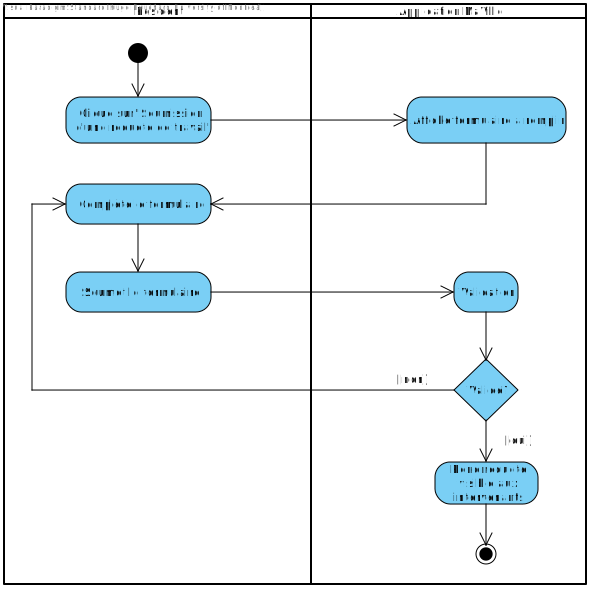

Cadre du projet
Introduction
Ce projet consiste à créer l'application MaVille qui a pour but de développer une collaboration étroite entre les citoyens de la ville de Montréal ainsi que ses nombreux intervenants responsables des travaux publiques. Cette application permettra aux citoyens de prendre part à une planification participative qui vise à donner une voix aux résidents en ce qui concerne les travaux. Celle-ci permettra aussi de consulter les travaux en cours et à venir, de soumettre des requêtes de travail, de signaler des problèmes et de recevoir des notifcations personnalisées! Ce projet sera aussi utilisé par les intervenants pour soumettre des projets de travail ainsi que pour mettre à jour les informations relatives aux chantiers. Ainsi, la collaboration entre ces deux partis permettra de diminuer les impacts des entraves sur le quotidien des citoyens et fera de Montréal une ville modèle.
Échéancier
La colonne 'Contributeurs' contient les intiales de ceux ayant participer aux tâches contenues dans chacune des rangées.

Exigences
Après un échange avec le client et une familiarisation avec le fonctionnement des travaux et chantier réalisé par la villes et les entraves que cela peut engendré, nous avons réaliser ce glossaire qui vise à éclaircir les termes clés dans le domaine.
Glossaire
- Authentification
- Inscription ou connexion d'un utilisateur à MaVille. Le processus varie selon le rôle de l'utilisateur (résident ou intervenant).
- Candidature
- Une candidature est ce qu'un intervenant peut déposer sur la requête de travail d'un résident. La candidature indique au résident qu'un intervenant serait prêt à réaliser son travail. Elle peut être acceptée ou refusée par le résident.
- Coordination des travaux
- Ensemble des méthodes mises en place pour unifier la réalisation des travaux.
- Formulaire
- Un formulaire est un ensemble de champs remplis par un utilisateur et qui sert à obtenir les informations nécessaires à la réalisation d'un cas d'utilisation.
- Identifiant de la ville
- Un identifiant de la ville est un code à 8 chiffres donné à tous les intervenants souhaitant travailler dans la ville de Montréal. Il doit donc s'enregistrer auprès de la ville et obtenir son code unique qui l'identifie.
- Intervenant
- Organisme, groupe ou individu du secteur publique (gouvernement, mairie, etc.) ou privé (entreprise de construction) qui soumet et met à jour l'état des travaux. Il prend aussi en compte les problèmes et requêtes de travail des résidents.
- Mise à jour
- La mise à jour d'un travail représente les informations d'un travail qui ont été changées par un intervenant. Ces informations peuvent être de natures diverses telles que l'état du travail, la description de celui-ci, la date de fin, etc.
- Notification
- Une notifcation est une mise à jour d'un travail qui est envoyée directement aux résidents concernés. Ces notifications sont donc un moyen pour les résidents de savoir facilement et clairement les changements apportés aux travaux qui les intéressent.
- Plage horaire
- Une plage horaire représente les moments de l'année où un résident préfère avoir des travaux (ex: un résident veut des travaux seulement en été ou bien un résident veut des travaux seulement en novembre).
- Planification participative
- Une approche de la gestion de projets qui prend en compte ce que les résidents veulent et ne veulent pas (ex: les résidents partagent leur plage horaire idéale durant laquelle ils seraient d'accord avec des travaux).
- Prototype
- Le prototype est la première esquisse de l'application. C'est la première implémentation et la première façon de voir si les exigences sont respectées.
- Requête de travail
- Un formulaire à remplir sur l'application MaVille permettant aux résidents de trouver un intervenant désirant d'entreprendre le travail offert par le résident.
- Résident
- Une personne ayant le statut de résident de la ville de Montréal.
- Travail
- Un travail est essentiellement un chantier dans la ville de Montréal. Que ce soit un chantier publique ou privé, tous les chantiers sur l'île sont considérés comme un travail.
- Validation
- La validation est l'action de vérifier, à l'aide de méthodes diverses, si des valeurs ou des formulaires sont de bon format, de bon type, respectent les critères, etc.
Cas d'utilisation

À propos des acteurs
Le résident et l'intervenant sont représentés sans relation de généralisation, car chacun a un rôle différent que l'autre ne peut pas réaliser. Par exemple, un résident ne pourrait pas remplacer un intervenant, car celui-ci ne peut pas mettre à jour les informations liées à un chantier. Le résident et l'intervenant n'ont en fait aucun cas d'utilisation en commun; ce sont deux parties distinctes de l'application.
À propos des relations
Tous les cas d'utilisation du résident et de l'intervenant incluent l'inscription/l'authentification, car celle-ci est nécessaire afin d'accéder au reste de l'application et, ultimement, aux actions possibles. Toutes les autres relations sont les relations d'association du résident et de l'intervenant.
Scénarios
Scénario principal
- Le résident ouvre l'application MaVille.
- Le système affiche l'écran d'authentification.
- Le résident sélectionne l'option pour se connecter.
- Le système affiche l'écran de connexion.
- Le résident entre son adresse courriel et son mot de passe pour se connecter.
- Le résident appuie sur le bouton pour se connecter.
- Le système valide les informations entrées.
- Le résident est connecté à l'application.
- Le système affiche le menu principal.
Scénarios alternatifs
Scénario principal
- Le résident sélectionne l'option pour accéder au répertoire des travaux.
- Le système ouvre le répertoire des travaux, dans l'onglet 'en cours'.
- Le système affiche la liste des travaux en cours par ancienneté croissante.
- Le résident demeure sur l'onglet actuel.
- Le résident entre des critères de recherche.
- Le système affiche la liste des travaux correspondants à la recherche.
- Le résident sélectionne un travail.
- Le résident clique sur le bouton en cloche pour activer les notifications.
- Le système indique que les notifcations pour le travail sont activées.
- Le résident clique sur le travail sélectionné.
- Le système affiche les détails du travail sélectionné.
Scénarios alternatifs
Scénario principal
- Le résident sélectionne l'option 'Soumission d'une requête de travail'.
- Le système affiche le formulaire à remplir.
- Le résident remplit le formulaire en détaillant sa requête.
- Le résident ajoute des pièces jointes si nécessaire.
- Le résident soumet la requête.
- Le système rend la requête visible aux intervenants.
Scénarios alternatifs
Scénario principal
- Le résident sélectionne l'option 'Suivi des requêtes de travail'.
- Le système affiche la liste des requêtes.
- Le résident clique sur une requête.
- Le système affiche l'état de la requête.
- Le résident accepte la candidature déposée par un intervenant.
- Le système met à jour la requête et la marque comme terminée.
Scénarios alternatifs
Scénario principal
- Le résident sélectionne l'option 'Préférences de plage horaire'.
- Le système affiche la liste des préférences de plage horaire déjà envoyées dans son quartier ainsi qu'un bouton pour envoyer ses préférences.
- Le résident clique sur le bouton pour envoyer ses préférences.
- Le système affiche la boîte texte à remplir.
- Le résident rédige ses préférences de plage horaire.
- Le résident soumet ses préférences.
- Le système met à jour la page pour afficher les préférences nouvellement ajoutées.
Scénarios alternatifs
Scénario principal
- Le résident sélectionne l'option 'Avis sur les travaux'.
- Le système affiche la liste des travaux terminés dans le quartier.
- Le résident clique sur un travail.
- Le système affiche tous les avis déjà présents pour ce travail ainsi qu'un bouton pour envoyer un avis.
- Le résident clique sur le bouton pour envoyer son avis.
- Le système affiche la boîte texte à remplir.
- Le résident rédige son commentaire quant au travail.
- Le résident soumet son avis.
- Le système met à jour la liste d'avis en ajoutant le nouvel avis.
Scénarios alternatifs
Scénario principal
- L'intervenant sélectionne l'option pour signaler un problème.
- Le système affiche un formulaire à remplir.
- Le résident remplit le formulaire avec les informations demandées.
- Le résident ajoute des pièces jointes si nécessaire.
- Le résident soumet le signalement.
- Le système achemine le formulaire rempli à la ville de Montréal.
Scénarios alternatifs
Scénario principal
- Le résident sélectionne l'option pour accéder aux notifications.
- Le système affiche l'ensemble des notifications reçues.
- Le résident clique sur une notification pour accéder aux informations du chantier concerné.
- Le système affiche les changements apportés au travail concerné.
- Le résident clique sur le bouton pour voir plus d'informations.
- Le système affiche l'ensemble des informations du travail.
Scénarios alternatifs
Scénario principal
- L'intervenant ouvre l'application MaVille.
- Le système affiche l'écran d'authentification.
- L'intervenant sélectionne l'option pour se connecter.
- Le système affiche l'écran de connexion.
- L'intervenant entre son adresse courriel et son mot de passe pour se connecter.
- L'intervenant appuie sur le bouton pour se connecter.
- Le système valide les informations entrées.
- L'intervenant est connecté à l'application.
- Le système affiche le menu principal.
Scénarios alternatifs
Scénario principal
- L'intervenant sélectionne l'option pour mettre à jour un chantier.
- Le système affiche les travaux en cours.
- L'intervenant sélectionne le chantier qu'il souhaite mettre à jour.
- L'intervenant modifie les informations pertinentes.
- L'intervenant enregistre les modifications.
- Le système met à jour les informations du travail.
- Le système envoie une notification aux résidents concernés.
Scénarios alternatifs
Scénario principal
- L'intervenant sélectionne l'option pour soumettre un nouveau travail.
- Le système affiche le formulaire à remplir.
- L'intervenant entre le titre du projet, la description, le type du travail, les quartiers affectés, les rues affectées et l'horaire des travaux.
- L'intervenant clique sur le bouton pour consulter les préférences des résidents du(es) quartier(s) affecté(s).
- Le système affiche les préférences des résidents quant à la plage horaire idéale.
- L'intervenant ferme la page et retourne au formulaire.
- L'intervenant termine le formulaire en entrant la date de début et de fin.
- L'intervenant ajoute des pièces jointes si nécessaire.
- L'intervenant soumet le formulaire.
- Le système informe l'intervenant des conflits avec les préférences des résidents concernés.
- Le système envoie le formulaire.
Scénarios alternatifs
Scénario principal
- L'intervenant sélectionne l'option consulter les requêtes de travail.
- Le système affiche la liste des requêtes en cours.
- L'intervenant entre des critères de recherche.
- Le système affiche toutes les requêtes correspondantes aux critères.
- L'intervenant sélectionne une requête spécifique.
- L'intervenant pose sa candidature pour la requête sélectionnée.
- Le système informe l'intervenant que la candidature a été envoyée.
- Le système met à jour les requêtes de travail en cours.
Scénarios alternatifs
Diagramme d'activités
S'authentifier comme résident

Consulter les travaux

Soumission d'une une requête de travail
Suivi des requêtes de travail

Envoyer ses préférences de plage horaire

Envoyer son avis sur les travaux terminés

Signaler un problème

Accéder aux notifications

Analyse
Risques
- Risque de recevoir trop de requêtes de travail.
Des utilisateurs pourraient soumettre plusieurs requêtes de travail dans l'unique but de surcharger le serveur et de rendre la performance de l'application inadéquate.
Solution
Il serait possible de limiter le nombre de requêtes actives en même temps ou bien de mettre un intervalle de temps minimal entre chaque requête. De cette manière, la soumission rapide de plusieurs requêtes de travail serait impossible. Évidemment, le nombre maximal de requêtes actives ou l'intervalle de temps minimal devraient être implémentés de sorte à ne pas nuire aux utilisateurs qui doivent réellement en faire plusieurs. Il serait donc nécessaire de mettre une limite adéquate. - Risque d'une mise à jour tardive ou inexistante de l'état des travaux.
Des intervenants pourraient ne pas mettre à jour l'état des travaux selon les normes ce qui créerait des décalages voire des plaintes de la part des résidents.
Solution
On pourrait mettre en place une politique pour forcer les intervenants à mettre à jour les travaux en cours et, s'ils ne le font pas, ils ne pourront plus faire de travaux dans la ville pendant un certain temps. Une autre solution serait d'implémenter un système de pénalités. Si un intervenant amasse trop de pénalités pour son retard dans les mises à jour, il sera inadmissible à poser sa candidature sur des requêtes de travail et ne pourra plus soumettre de travaux. - Risque de fuite de données
Les données sensibles des utilisateurs (adresse, numéro de téléphone, date de naissance, etc.) pourraient être accessibles à des personnes malveillantes qui veulent nuire aux utilisateurs de l'application.
Solution
Il serait possible d'implémenter des protocols de sécurité permettant de protéger la confidentialité des données sensibles des utilisateurs et ainsi assurer leur sécurité. - Risque de validation de données insuffisante.
Si la validation de formulaires et de données entrées par les utilisateurs n'est pas assez forte, il pourrait y avoir des données inutiles, manquantes, de mauvais format et même dangereuses. Des données validées d'une manière inadéquate pourraient amener des problèmes dans l'application, plus précisément pour le serveur qui gère ces données. Le serveur pourrait prendre beaucoup de temps à les gérer voire même être incapable de les gérer.
Solution
Il serait nécessaire d'implémenter une validation de formulaires et de données robuste de sorte à accepter uniquement les données désirables et celles qui ne correspondent pas à ce que le serveur doit utilisé seront considérées invalides et ne seront pas utilisées. - Risque d'authentification non sécurisée.
Si l'utilisateur a un mot de passe simple, il serait facilement possible pour des personnes malveillantes de le trouver et de se connecter sur le compte de l'utilisateur. De plus, même si le mot de passe est complexe, il serait possible de trouver le de passe par la "brute force", c'est-à-dire plusieurs tentatives d'authentification à la suite jusqu'à ce que la connexion fonctionne.
Solution
Il faudrait tout d'abord mettre certains critères nécessaires lors de la création d'un mot de passe de sorte à avoir un mot de passe assez complexe et sécuritaire. Il faudrait aussi mettre en place un nombre maximal de tentatives d'authentification dans une certaine période de temps pour éviter que le mot de passe puisse être trouvé en essayant consécutivement plusieurs mots de passe.
Besoins non-fonctionnels
- Performance
L'application doit répondre en moins de 2 secondes pour les rêquetes de base comme la navigation dans le menu, l'affichage des informations ou le traitement d'envoi d'information. La performance assure que les utilisateurs ont une expérience fluide et efficace; aucune perte de temps. - Compatibilité
L'application doit être compatible avec différentes plateformes (Windows, macOS, Linux, Android, iOS) afin d'être disponible pour le plus de personnes possible et ainsi aider le plus de citoyens possible! - Sécurité
Les données des utilisateurs doivent être protégées selon les normes pour que les informations enregistrées ne soient accessibles par aucune personne externe. Sinon, les utilisateurs ne se sentiraient pas à l'aise de partager leurs informations et l'application ne serait pas populaire; les utilisateurs veulent se sentir en confiance. - Ergonomie
L'interface doit être intuitive, facile à utiliser et à prendre en mains. De cette manière, les utilisateurs seront en mesure de faire ce qu'ils veulent rapidement et de compléter leurs actions sans ambiguités, sans prises de tête. Ils auront donc un avis positif de l'application et elle fera parler d'elle en retour, donc plus d'utilisateurs. - Multilinguisme
L'application doit au moins être disponible en anglais et en français, car la ville de Montréal possède une grande population anglophone et celle-ci doit aussi avoir accès à l'application. De plus, une application seulement en français (ou seulement en anglais) ne serait pas bien reçue dans la métropole québécoise et cela ferait de la mauvaise publicité, donc doublement nécessaire.
Besoins matériels
Pour la réalisation de ce projet, il faudra un serveur pour héberger l'application MaVille, gérer les requêtes des utilisateurs et intéragir avec les bases de données. Le serveur sera codé en Java avec une architecture simple (client, serveur). De plus, un SSD ou un HDD sera nécessaire pour stocker les informations (les données seront stockées dans des fichiers). Finalement, un ordinateur sera nécessaire pour lancer l'application.
Solution de stockage
La solution d'intégration pour l'application MaVille comprend la création d'un serveur simple en Java qui gérera les requêtes des utilisateurs et intéragira avec les systèmes existants, tels que le service Info entraves et travaux de la ville de Montréal. Ce serveur sera capable de recevoir des commandes pour stocker, récupérer et mettre à jour les informations relatives aux projets et aux demandes des utilisateurs. Les données seront stockées dans un fichier au format texte, JSON ou XML, permettant une gestion flexible et structurée des informations. En utilisant des sockets, on pourra établir une communication efficace entre le client (l'application MaVille) et le serveur. Cela permettra à l'application de centraliser les données et de les synchroniser en temps réel avec les services municipaux. De plus, le serveur garantira la sécurité et l'accessibilité des données en traitant les requêtes de manière sécurisée et en maintenant un accès facile aux informations nécessaires pour les utilisateurs de l'application.
Solution d'intégration
L'intégration de l'application MaVille avec des services municipaux, comme le service Info entraves et travaux, consiste à étudier comment connecter efficacement les deux systèmes. Par exemple, on pourrait utiliser des API qui permettraient à MaVille de recevoir automatiquement des informations sur les travaux et fermetures de routes en temps réel. Ensuite, l'application pourrait afficher ces données de manière claire pour les utilisateurs et leur envoyer des notifications basées sur leur domicile dans la ville de Montréal. Cela simplifierait la vie des citoyens en leur donnant accès à des informations actualisées directement sur leur téléphone ou ordinateur tout en facilitant la gestion des flux d'information pour la ville.
Prototype
Pour pouvoir correctement lancer le prototype, il faut tout d'abord s'assurer que la version 22 de Java est installée sur votre appareil.
Pour vérifier que Java est bien installé, tapez la commande suivante dans votre terminal :
java -version.
Si Java n'est pas installé, vous pouvez le télécharger et l'installer en suivant
ces instructions.
Une fois que vous avez vérifié que Java est bien installé, suivez les étapes ci-dessous pour lancer l'application :
1. Téléchargez le fichier prototype.jar sur votre machine.
2. Ouvrez l'invite de commande ou le terminal.
3. Changez de répertoire vers l'emplacement où se trouve le fichier prototype.jar. Utilisez la commande cd pour vous déplacer dans le bon répertoire :
- Pour Windows :
cd C:\chemin\vers\le\répertoire\où\se\trouve\prototype.jar - Pour Linux/macOS :
cd /chemin/vers/le/répertoire/où/se/trouve/prototype.jar
4. Une fois dans le bon répertoire, lancez le fichier avec la commande suivante :
java -jar prototype.jar.
Assurez-vous de vous trouver dans le bon répertoire où vous avez téléchargé le fichier prototype.jar avant de lancer la commande.
Une fois le programme lancé, vous pouvez vous inscrire et utiliser les informations que vous avez fournies pour vous connecter, ou vous pouvez utiliser les identifiants préconstruits : e-mail : User@gmail.com et mot de passe : User.
Lorsque vous serez authentifié, vous pourrez naviguer dans le menu en entrant le chiffre correspondant à chaque choix, et en tapant EXIT pour revenir en arrière.
Certaines fonctionnalités liées aux résidents sont implémentées dans les choix de menu et sous-menu. En tapant EXIT, vous pourrez revenir en arrière.
NB : Le code se retrouve dans le répertoire GitHub si vous voulez le consulter ou exécuter le prototype depuis le code.